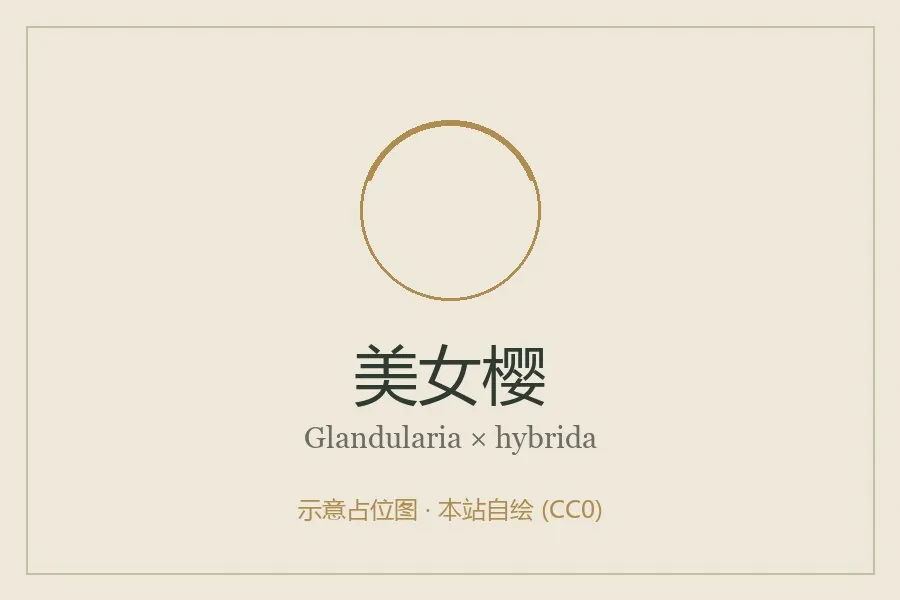

花卉与草本 · 植物界
美女樱 Glandularia × hybrida

马鞭草科多年生草本，伞房状花序密集成团，花色明艳，匍匐生长适合花坛镶边与吊篮，原产南美，常作一年生栽培。
- 分类
- 门被子植物门纲木兰纲目唇形目科马鞭草科属美女樱属
- 栖息环境
- 南美草原与河岸，喜阳光充足、温暖湿润
- 地理分布
- 原产南美洲，现世界各地广泛栽培，中国各地花坛常见
- 保护级别
- 暂无评估
物种志
美女樱为马鞭草科美女樱属多年生草本，常作一年生栽培，株高 20–50 厘米，茎匍匐或斜升，四棱形，全株被短毛。叶片对生，长圆形至披针形，边缘有粗锯齿。伞房花序顶生，由多数小花密集组成，花冠 5 裂，有红、粉、紫、白、蓝等色，花期 5–10 月；果实为蒴果。
美女樱原产南美洲巴西、阿根廷一带，园艺品种多为杂交种，喜阳光充足、温暖湿润和通风良好的环境，较耐寒但不耐酷热，盛夏需适当遮阴。它枝条匍匐、着花密集，是花坛镶边、坡地地被和吊篮的理想材料，成片种植时可形成彩色花毯。栽培以扦插和播种为主，生长期摘心可促使分枝、增加花量，花后修剪可延长观赏期。
形态与习性
- 株高20–50 厘米，茎匍匐或斜升
- 花期5–10 月，花序密集
- 果期花后结蒴果
- 光照喜充足阳光，盛夏适当遮阴
- 水分喜湿润，忌积水
- 土壤疏松肥沃、排水良好的壤土
- 繁殖扦插、播种
- 主要用途花坛镶边、地被、吊篮
趣味知识
- 美女樱的花序由许多小花密集成团，盛开时像一块彩色花毯。
- 它的茎匍匐生长，是花坛镶边和吊篮绿化的理想材料。
- 美女樱较耐寒但不耐酷热，盛夏高温时开花会明显减少。
- 生长期摘心可促进分枝，让株形更饱满、花量更大。